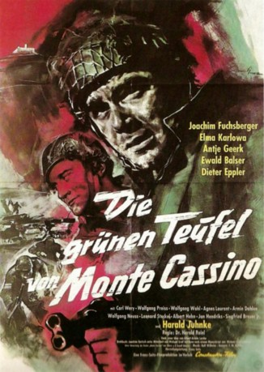

#8948 Die Grünen Teufel
Alternativ: The Green Berets
 
 IMDB-Wertung: 5.7 / 10
IMDB-Wertung: 5.7 / 10  Metascore: 0
Metascore: 0 
U.S. Special Forces troops ("Green Berets") under the command of Colonel Mike Kirby defend a firebase during the Vietnam war. War correspondent George Beckwith accompanies Kirby and objects to both the war and the means by which it is executed. Kirby's firebase is overrun and his troops fight bravely to retake it. Kirby and a select group of his men are then ordered on a special mission to capture a high-level Viet Cong officer.
Jahr: 1968
Dauer: 141 Minuten
FSK: 16
Land: USA Studio: Warner Bros.-Seven ArtsTonspuren:
Untertitel:
Auflösung: 1080p (1920x800) Größe: 6912 MB
Genre: Drama, Krieg
Regisseur: Ray Kellogg,  John Wayne, Mervyn LeRoy
John Wayne, Mervyn LeRoy
Drehbuch: James Lee Barrett
Soundtrack: Miklós Rózsa
Darsteller:
 John Wayne als Col. Mike Kirby
John Wayne als Col. Mike Kirby David Janssen als George Beckworth
David Janssen als George Beckworth Jim Hutton als Sgt. Petersen
Jim Hutton als Sgt. Petersen Aldo Ray als Sgt. Muldoon
Aldo Ray als Sgt. Muldoon Raymond St. Jacques als Sgt. Doc McGee
Raymond St. Jacques als Sgt. Doc McGee Bruce Cabot als Col. Morgan
Bruce Cabot als Col. Morgan- Jack Soo als Col. Cai
 George Takei als Capt. Nim
George Takei als Capt. Nim Patrick Wayne als Lt. Jamison
Patrick Wayne als Lt. Jamison Luke Askew als Sgt. Provo
Luke Askew als Sgt. Provo- Irene Tsu als Lin
 Edward Faulkner als Capt. MacDaniel
Edward Faulkner als Capt. MacDaniel- Jason Evers als Capt. Coleman
 Mike Henry als Sgt. Kowalski
Mike Henry als Sgt. Kowalski Chuck Roberson als Sgt. Griffin
Chuck Roberson als Sgt. Griffin- Richard 'Cactus' Pryor als Collier
 Leon Alton als Maitre d' (uncredited)
Leon Alton als Maitre d' (uncredited)- Jess Barker als Soldier (uncredited)
 Walker Edmiston als Lt. Moore (uncredited)
Walker Edmiston als Lt. Moore (uncredited)- Paul Genge als Gen. Thomas (uncredited)
 Tom Hennesy als Soldier (uncredited)
Tom Hennesy als Soldier (uncredited) Kenner G. Kemp als Nightclub Patron (uncredited)
Kenner G. Kemp als Nightclub Patron (uncredited) Cliff Lyons als Hugh Parkinson (uncredited)
Cliff Lyons als Hugh Parkinson (uncredited) Ernie F. Orsatti als Sgt. Don Ross (uncredited)
Ernie F. Orsatti als Sgt. Don Ross (uncredited) James Seay als Soldier (uncredited)
James Seay als Soldier (uncredited)- Hayward Soo Hoo als Soldier (uncredited)
 Dick Warlock als Soldier (uncredited)
Dick Warlock als Soldier (uncredited)- Craig Jue als Hamchunk
 Eddy Donno als Sgt. Watson
Eddy Donno als Sgt. Watson- Rudy Robbins als Sgt. Parks
- Yodying Apibal als South Vietnamese Soldier (uncredited)
- Charles Bail als Sgt. Lark (uncredited)
- Jim Burk als Soldier (uncredited)
- Vincente Cadiente als Viet Cong Soldier (uncredited)
- Peter Chin als Viet Cong Soldier (uncredited)
- Don Gazzaniga als Soldier (uncredited)
- Norman Goodwins als Soldier (uncredited)
- Frank Koomen als Lt. Sachs (uncredited)
- Pat Li als Vietnamese Woman (uncredited)
- David Lowe als Kenny (uncredited)
- Fred Murphy als Soldier (uncredited)
- William Olds als Gen. Phan Son Ti (uncredited)
- Ron Ross als Soldier (uncredited)
- Phillip Roye als Soldier (uncredited)
- Al Scott als Bo'sun (uncredited)
- Bill Shannon als Sgt. White (uncredited)
- Irwin Simon als Hotel Desk Clerk (uncredited)
- Walter Soo Hoo als Viet Cong Soldier (uncredited)
- Laird Stuart als Lt. Olsen (uncredited)
- Victor Toyota als Agent (uncredited)
Datei: X:\1968\Grünen Teufel, Die (1968, FSK16, 1920x800).mkv seit 16.05.2018
Festplatte: HD 1900-1970
 Es gibt insgesamt 25 Filme in der Gruppe '1968'
Es gibt insgesamt 25 Filme in der Gruppe '1968'